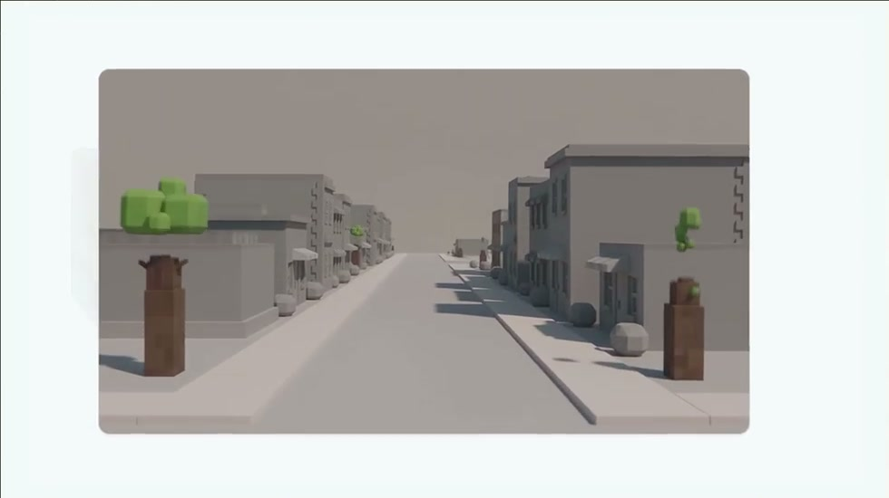
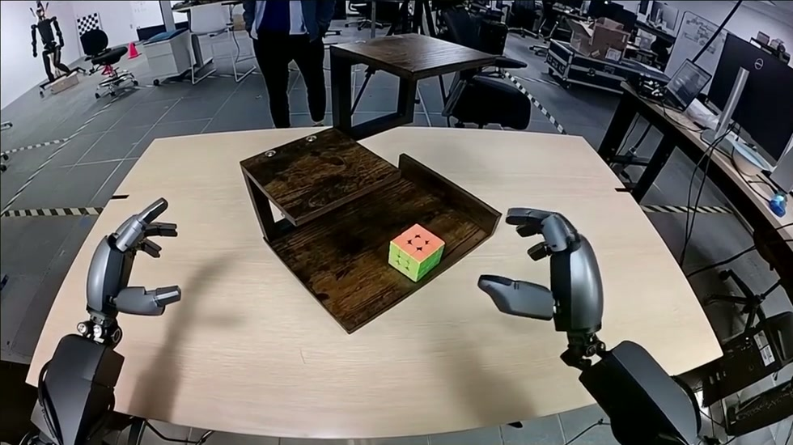
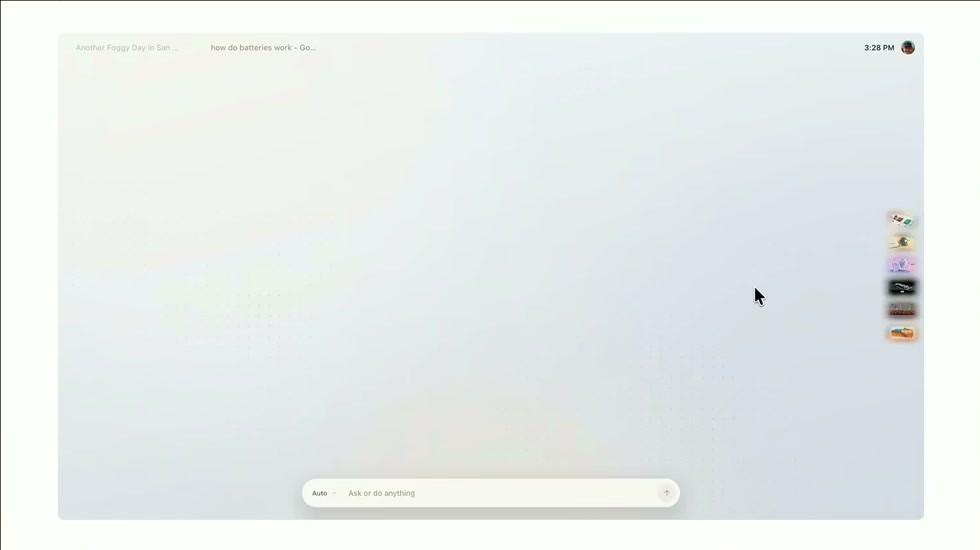
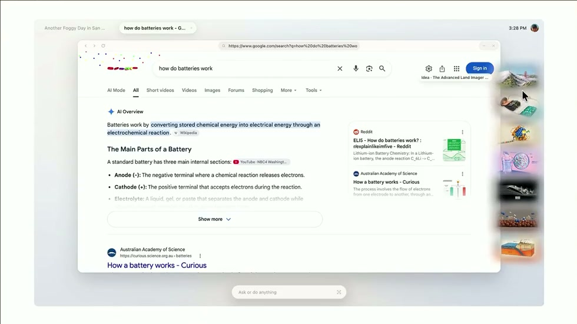
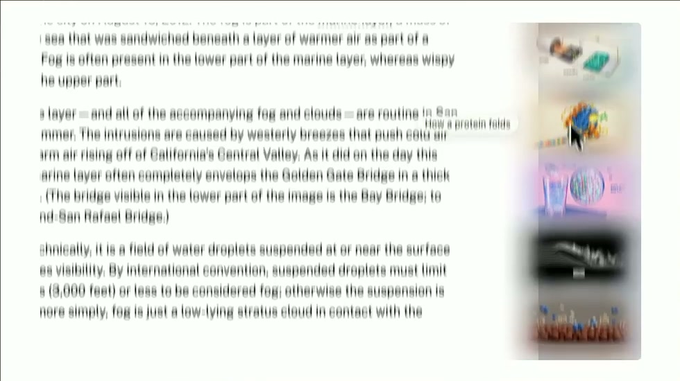
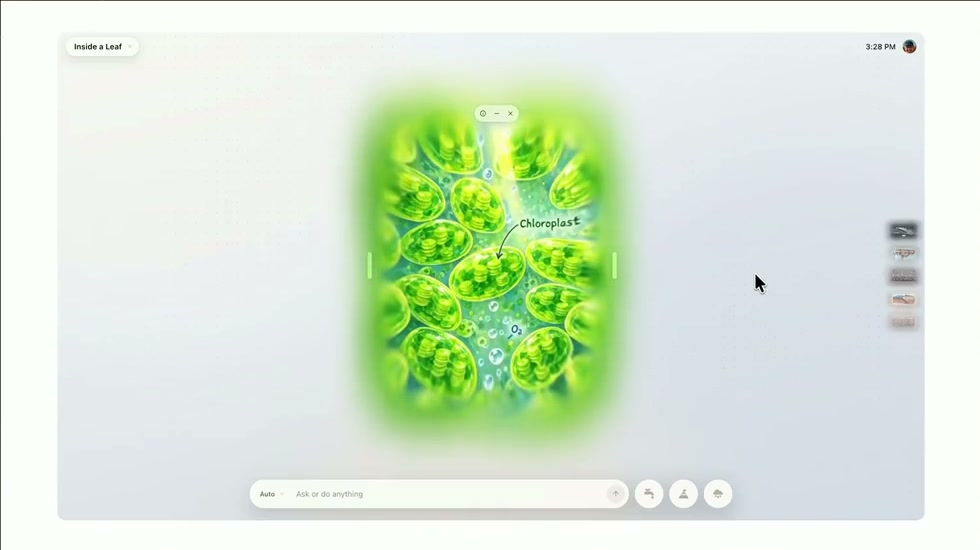

Any pixel on a screen can be a model
The demo that sets up the rest of the talk is a red car in an alley. It could be a photo. Valenzuela runs one of Runway's video models over it in real time and treats it as an application: turn on the lights, turn the car around, open the hood and look inside. In the video the engine bay comes up with a label on the high-voltage cabling.
Nothing behind it is a 3D scene. There is no model of the car and no game engine, only a video model trained to understand actions and clicks in an interface. He fumbles the name on stage and settles on “world interface model”: an interface that is also a world model.
This is the use he says goes beyond the two obvious ones, video and robotics. Any pixel on a screen can be generated by the model, in response to what you just did.
“There's no Unity. There's no Unreal. There's no Blender.”00:05:41
- A still image becomes an application once a real-time video model answers clicks on it.
- There is no 3D representation underneath.
- Runway's name for this is a world interface model.
Evidence: transcript 00:05:41 · watch the car demo
Why it works: predicting frames taught the model the world
The interface demos rest on one old idea. Cinema found 120 years ago that frames shown fast enough create the illusion of movement, and Runway's models predict the next frame from the previous ones. In 2019 that produced a 128-pixel film of an orange rolling through the world. Today it produces people and places that Valenzuela, after ten years of this, says he cannot tell from real footage.
The side effect is the important part. To keep a scene consistent the model has to pick up physics, object permanence, gravity and occlusion, all from video alone. His example is a camel on a pedestal with objects stacked on its back: the model needs to know what each thing is and how they relate to make the shot hold together. Runway is scaling the compute behind this; the slide projects roughly 240 times the 2023 level by 2030.
“You're learning about physics. You're learning about object permanence.”00:00:00
- Next-frame prediction is the whole mechanism, scaled up.
- Consistent video forces the model to learn how objects behave.
- That learned behaviour is what the interfaces later draw on.
Evidence: transcript 00:00:00
Real time is what turns a video into something you can act on
Everything in the first half of the talk took seconds or minutes to generate. The shift he cares about for the next three or four years is making the models interactive as well as bigger. Predict a frame, then the next, but let someone act at any point in the sequence, and the model can play out any divergence in that world.
Put that in a game-like setting and it starts to look like a physics engine in which nobody wrote the physics. The video shows a blocky street and then a person steering a character through an office. The same models are becoming the brains of robots: half of Runway's New York office looks like a Hollywood studio and the other half is robots moving around.


Then comes the room. From a single image of a living room, he moves objects around and they behave as if he were there. In the video a colour picker appears over the sofa and the sofa turns from rust to blue, with the wall art and the plant changing too.
“The video model has been trained to understand actions and clicks in an interface.”00:05:41
- Earlier video models were not real time; the next ones are interactive.
- Acting mid-prediction lets the model simulate the consequences.
- The same capability drives game-like worlds, robots and editable rooms.
Evidence: transcript 00:05:41 · watch the room demo
Continuum: the operating system is streamed from a model
Valenzuela says extrapolating may be one of the most important skills in AI right now, and Continuum is Runway extrapolating: what if the model becomes a universal simulator that can predict anything on a screen? The answer he shows is an operating system. You open your computer and what streams to the screen comes from a model. He calls it very early research.

The first demo starts from an ordinary web page, a NASA article about fog in San Francisco. He selects part of the content and turns it into what Runway calls a portal: a real-time, fully interactive video generated from the text he was reading. In the video a soft-edged view of the Golden Gate in fog opens inside the article. He is candid about why: it is too much text, so make it a video.
“We call this a portal, and the portal is a real-time video.”00:11:22
- Continuum is an operating system whose screen is generated.
- A portal turns any selected content into a live, interactive video.
- The source is real structured content: a website, a search result.
Evidence: transcript 00:05:41, 00:11:22 · watch from the Continuum title
The interface answers everything you do to it
Portals stack up. Down the right edge of the screen sits everything he has opened before, which he describes as a memory of the visualizations he has seen. He goes back to one about batteries, opened from a search result, moves it around, and asks it questions; the content changes with the interaction.



Because the portal is a live video, any input can change it, not only clicks. He is learning about photosynthesis, and resizing the window gives a different experience: the leaf cross-section becomes a view inside the cell. He can also change what is generating the portal in the first place. In the video a panel opens over the leaf showing the text behind it, a description of a textbook cutaway with its labels.
He admits he does not have a word for this, and thinks naming it is collective work still to do.
“It doesn't feel like a visualization. It doesn't feel like a video. It doesn't feel like a game.”00:11:22
- Past portals are kept and can be reopened and questioned.
- Resizing a window is an input that changes what is shown.
- The description that generates a portal can be opened and edited.
Evidence: transcript 00:11:22 · watch the leaf demo
Visual thinking: an agent that works a problem out in pictures
The demo Valenzuela calls the most underexplored connects Continuum to a coding agent. Asked for a 3D model for a bike, the agent does not only reason in code. It spins up a Continuum view and thinks through the problem visually. In the video the request is for a printable bike mount; candidate parts appear as renders, and the agent's reply recommends a truss arm.
The view is shared. The agent can interact with what it imagined, and so can the person, which lets them steer the agent in ways text alone would not. He compares it to people who think through ideas visually first, and calls it a new paradigm.
“Agents have the ability to do visual thinking.”00:11:22
- A coding agent can open a generated view to reason about a physical object.
- The person sees and touches the same view the agent is using.
- Steering by pointing at a picture is richer than steering by text.
Evidence: transcript 00:11:22 · watch the bike demo
Interfaces designed on the spot, for the thing you are doing
The last demo is the furthest out. He searches for Mars, and Continuum reads the intent and suggests an interface built in real time for that search: a Mars outpost. He says it should be accurate to data about the robots on Mars now, or those projected for 2030, and he can move through it the way he would in a 3D system. In the video the search results give way to a rover on a red plain and then a glass dome with plants inside.
That is what the title means. If the model can simulate anything on a screen, a lot of what looks new today will look obvious in a few years. He ends with a date: Runway plans to release most of what he showed over the next eight to twelve months.
“We make them universal simulation systems that can predict anything on a screen.”00:05:41
- The system proposes an interface from what you are searching for.
- The generated world is meant to reflect real data, and you can walk around in it.
- Runway says most of this ships within eight to twelve months.
Evidence: transcript 00:05:41, 00:11:22 · watch the Mars demo